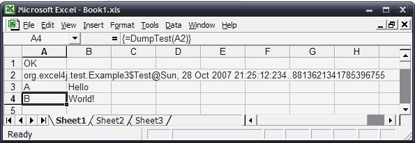

The reflection framework allows you to pass around Java objects to and from functions.
This is achieved via ID references (strings) and a cache. An example of this is:
package org.excel4j.test;
import org.excel4j.reflect.ReflectAddin;
/**
* An example using objects.
*/
public class Example3 extends ReflectAddin
{
public static class Test {
String a, b;
}
public Test CreateTest() {
Test a = new Test();
a.a = "Hello";
a.b = "World!";
return a;
}
public String[][] DumpTest(Test t) {
return new String[][] {
{ "A", t.a },
{ "B", t.b }};
}
}
The excel sheet would then look like this:
